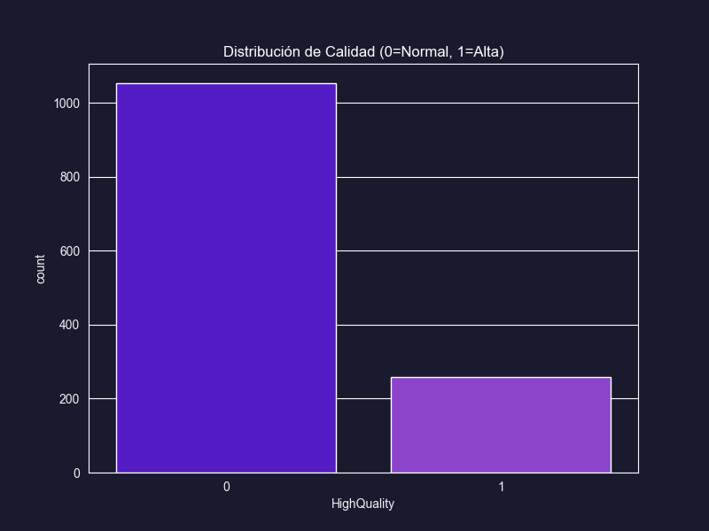
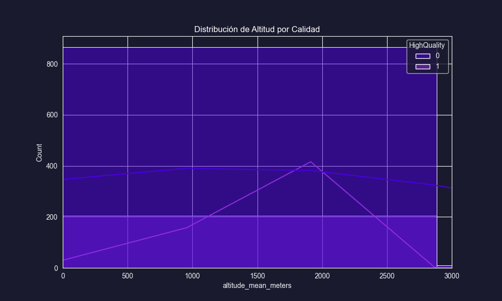
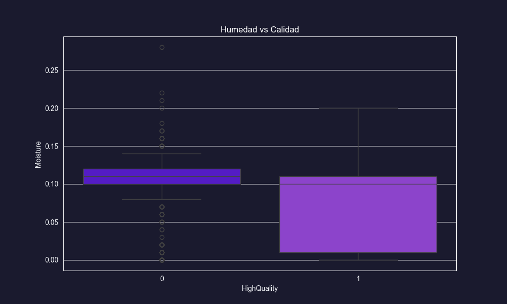
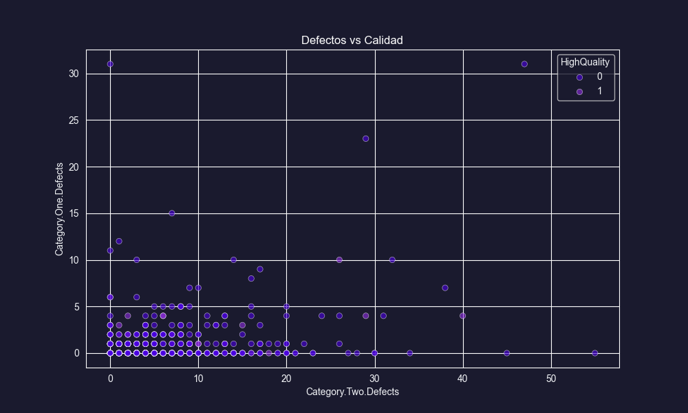
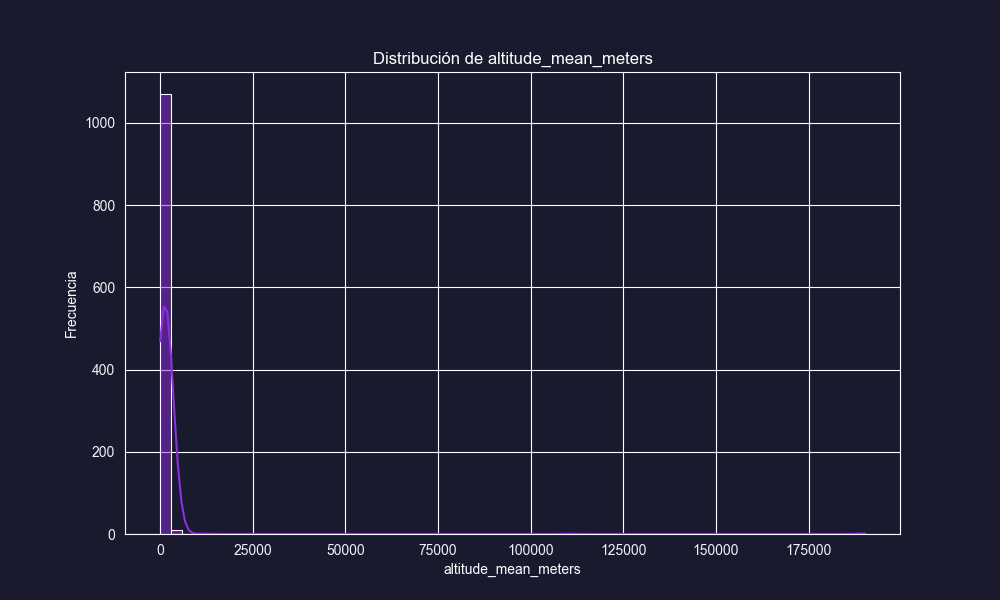
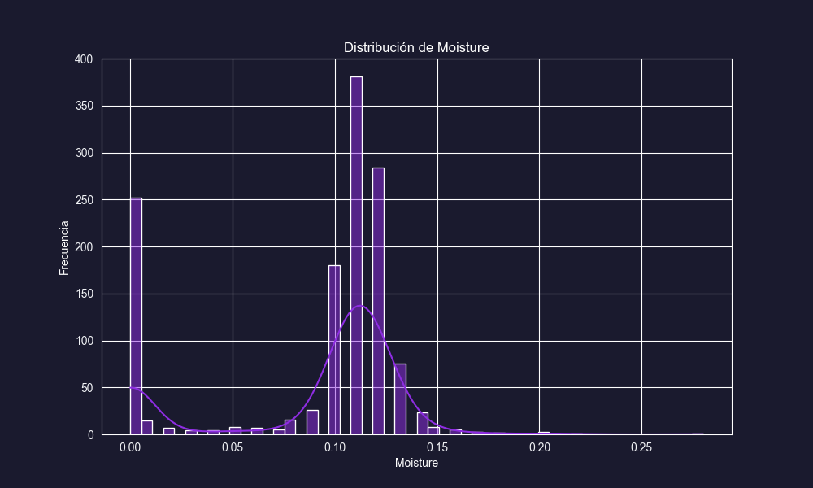
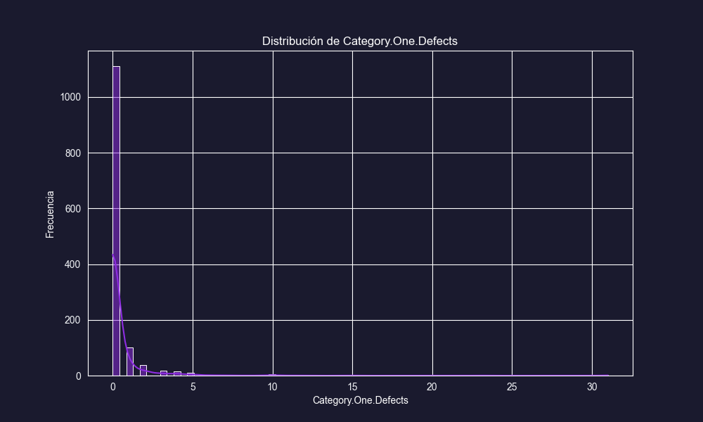
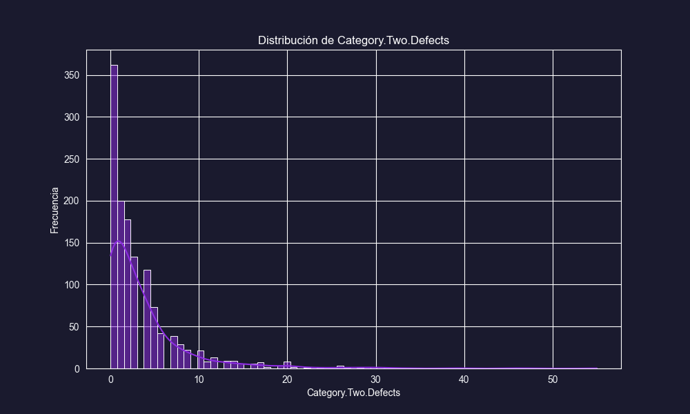
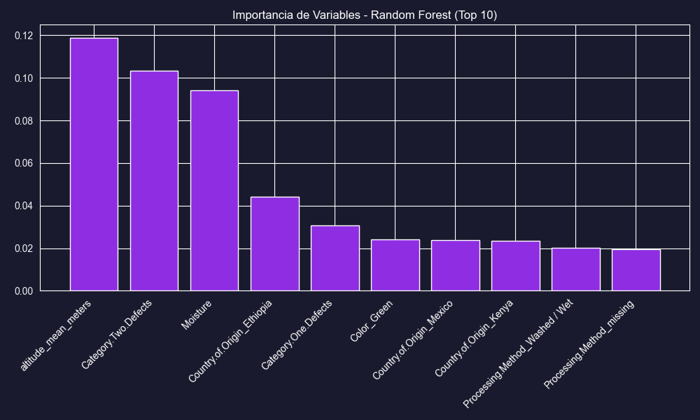

Análisis de Calidad del Café (Arabica)
Total de Muestras
1311
Alta Calidad (>=84)
19.68%
Puntaje Promedio
82.11
Altitud Media
1774m
Distribución de Calidad
Distribución de Altitud
Humedad vs. Calidad
Defectos vs. Calidad
Esta fase establece los objetivos para identificar café de especialidad de alta calidad, crucial para compradores y tostadores.
Meta Principal
El objetivo es identificar lotes de café de Alta Calidad (Puntaje >= 84) antes de la cata oficial, basándose en características agronómicas y de origen.
- Objetivo Primario: Optimizar el proceso de selección de proveedores enfocándose en regiones y características que prometen mayor calidad.
- Beneficio: Reducir costos de logística y cata al filtrar lotes con baja probabilidad de ser excepcionales.
Traducir la necesidad de negocio a un problema de clasificación.
- Variable Objetivo:
HighQuality(1 si Total.Cup.Points >= 84, 0 si no). - Criterio de Éxito: Un modelo con un Recall aceptable para la clase positiva (detectar el buen café) sin generar demasiados falsos positivos.
Análisis del dataset arabica_data_cleaned.csv.
2.1 Descripción de Datos
- Registros: 1311 muestras de café.
- Variables: 44 columnas originales.
- Target: Se creó la variable binaria basada en el puntaje de cata.
2.2 Hipótesis Iniciales
| Variable | Hipótesis |
|---|---|
Altitude |
A mayor altitud, generalmente mejor calidad debido a la maduración lenta del grano. |
Defects |
La presencia de defectos (Categoría 1 o 2) debería correlacionarse negativamente con la calidad. |
Processing Method |
Ciertos métodos (ej. Lavado vs Natural) pueden influir en el perfil de taza. |
Esta es la fase más intensiva y crucial. Aquí se limpian y transforman los datos brutos para que puedan ser utilizados por los algoritmos de machine learning.
Diccionario de Variables Seleccionadas
Variables clave utilizadas en el modelo:
| Variable | Definición |
|---|---|
| Country.of.Origin | País donde se cultivó el café. |
| Region | Región específica dentro del país. |
| Processing.Method | Método de procesamiento (Lavado, Natural, etc.). |
| Moisture | Porcentaje de humedad en el grano. |
| Category.One.Defects | Número de defectos primarios (graves). |
| Category.Two.Defects | Número de defectos secundarios (leves). |
| altitude_mean_meters | Altitud media de la finca en metros. |
| Color | Color del grano verde (Blue-Green, Green, etc.). |
| HighQuality (Target) | 1 si Puntos >= 84, 0 si no. |
Eliminación de Variables
Se eliminaron variables por dos razones principales: fuga de datos (data leakage) o falta de relevancia predictiva.
| Variable | Razón para Eliminar |
|---|---|
Aroma, Flavor, etc. |
Son componentes directos del puntaje final. Usarlos sería "trampa" ya que no se conocen antes de la cata. |
Lot.Number, Farm.Name |
Identificadores únicos con demasiada cardinalidad y poca generalización. |
ICO.Number |
Identificador administrativo sin valor agronómico. |
Detalle de Transformaciones (Paso a Paso)
Se identificaron valores faltantes en variables críticas. Estrategia aplicada:
- altitude_mean_meters: Imputación con la Mediana (para ser robusto a outliers).
- Region: Imputación con valor constante "missing" (para no perder la fila).
- Processing.Method: Imputación con la moda (valor más frecuente).
Se eliminaron 30+ columnas para evitar "Data Leakage" (trampa) o ruido.
| Variable(s) | Motivo de Eliminación |
|---|---|
Aroma, Flavor,
Aftertaste, Acidity,
Body, Balance,
Uniformity, Clean.Cup,
Sweetness,
Cupper.Points
|
Data Leakage: Son componentes directos de la variable objetivo (Total Cup Points). Conocerlos es conocer la respuesta. |
Lot.Number, Mill,
ICO.Number, Farm.Name,
Producer, Owner
|
Alta Cardinalidad / Irrelevante: Identificadores únicos o texto libre que no generalizan para un modelo predictivo. |
Unnamed: 0 |
Índice: Artefacto del archivo CSV. |
Transformación de texto a números usando One-Hot Encoding.
- Variables Afectadas:
Country.of.Origin,Region,Processing.Method,Color. - Resultado: Se generaron columnas
binarias (ej.
Country_Colombia=1,Country_Brazil=0). - Impacto: Explosión de dimensionalidad (de 44 a 396 columnas).
El dataset original estaba desbalanceado (80% Normal vs 20% Alta Calidad).
- Técnica: SMOTE (Synthetic Minority Over-sampling Technique).
- Acción: Se crearon "cafés sintéticos" de Alta Calidad interpolando entre muestras existentes.
- Objetivo: Evitar que el modelo aprenda a predecir siempre "Normal" por pereza estadística.
Estandarización de variables continuas para que tengan media 0 y desviación estándar 1.
- Variables:
altitude_mean_meters,Moisture,Category.One.Defects,Category.Two.Defects. - Razón: Algoritmos como Regresión Logística y KNN son sensibles a la escala (metros vs porcentaje).
Tratamiento de Variables Categóricas
Consecuencias: Explosión de Dimensionalidad
La codificación expande drásticamente el dataset. De 44 columnas
originales, el proceso de One-Hot Encoding (especialmente en la
variable Region y Country.of.Origin) genera un
total de 396 columnas finales.
Esto ocurre porque se crea una nueva columna binaria (0 o 1) para cada región única encontrada en los datos. Aunque aumenta la complejidad, es necesario para que el modelo entienda la geografía sin asumir un orden numérico falso.
Análisis de Simetría y Datos Atípicos
Visualización de la distribución de variables clave para detectar sesgos y outliers.
Altitud (Metros)
Distribución casi normal, centrada en ~1500m.
Humedad (%)
Concentración fuerte alrededor del 11-12%.
Defectos Cat. 1
Fuertemente sesgada a 0 (la mayoría no tiene defectos graves).
Defectos Cat. 2
Sesgada a la derecha, algunos lotes con muchos defectos leves.
Dataset Procesado
El dataset final contiene las variables transformadas listas para los modelos.
Contiene 1311 filas y 396 columnas (confirmado tras One-Hot Encoding).
Descargar dataset_cafe_procesado.csvEvaluación de modelos predictivos para clasificar café de alta calidad.
Modelo 1: Regresión Logística
Modelo lineal base que estima la probabilidad de que un café sea de alta calidad.
Análisis de la Matriz:
- Verdaderos Negativos (243): Predijo correctamente que 243 cafés eran normales.
- Falsos Positivos (73): Predijo incorrectamente que 73 cafés eran de alta calidad (falsas alarmas).
- Falsos Negativos (40): Predijo incorrectamente que 40 cafés eran normales, pero eran de alta calidad. ¡Pérdida de oportunidad!
- Verdaderos Positivos (38): Identificó correctamente 38 cafés de alta calidad.
El modelo tiene un Recall moderado (49%), perdiendo cerca de la mitad de los cafés buenos.
Modelo 2: Árbol de Decisión
Modelo basado en reglas "si-entonces" que divide los datos según características clave.
Análisis de la Matriz:
- Verdaderos Negativos (164): Correctamente identificados como normales.
- Falsos Positivos (152): ¡Muchos errores! 152 cafés normales fueron clasificados como excelentes.
- Falsos Negativos (31): Solo perdió 31 cafés buenos.
- Verdaderos Positivos (47): Identificó 47 cafés de alta calidad.
Recall Alto (60%): Este modelo detectó la mayor cantidad de cafés de alta calidad, pero a costa de una precisión muy baja.
Modelo 3: Random Forest
Ensamble de múltiples árboles de decisión.
Análisis de la Matriz:
- Verdaderos Negativos (280): Excelente filtrando cafés normales.
- Falsos Positivos (36): Pocas falsas alarmas.
- Falsos Negativos (54): Perdió 54 cafés buenos.
- Verdaderos Positivos (24): Solo encontró 24 cafés de alta calidad.
Precisión Alta, Recall Bajo: Es muy conservador; solo se arriesga cuando está muy seguro.
Importancia de Variables
Factores como la Altitud y el País de Origen dominan la predicción.
Comparación y Conclusiones
| Modelo | Accuracy | Recall (Alta Calidad) | AUC |
|---|---|---|---|
| Regresión Logística | 0.71 | 0.49 | 0.70 |
| Árbol de Decisión | 0.54 | 0.60 | 0.61 |
| Random Forest | 0.77 | 0.31 | 0.73 |
Recomendación
Para este negocio, el costo de "perder" un lote de café excepcional es alto. Por lo tanto, se recomienda el Árbol de Decisión o una Regresión Logística ajustada, ya que priorizan el Recall. El Random Forest, aunque preciso, es demasiado estricto para una fase de descubrimiento.
En esta fase, evaluamos el modelo no desde una perspectiva matemática, sino de impacto en el negocio. ¿Realmente nos ayuda a ahorrar dinero o encontrar mejor café?
5.1 Análisis de Ganancia (Lift Chart)
Este gráfico muestra cuánto mejor es el modelo comparado con elegir lotes al azar.
Interpretación: La curva azul (Modelo) sube mucho más rápido que la línea punteada (Azar). Esto significa que si analizamos solo el 30% de los lotes con mayor probabilidad según el modelo, encontraríamos casi el 60% de todo el café de alta calidad disponible. ¡Esto es una eficiencia enorme!
5.2 Análisis de Rentabilidad
Simulación financiera: Si cada cata cuesta $50 y encontrar un lote bueno genera $500 de ganancia.
Conclusión: El modelo sugiere que no es rentable catar el 100% de las muestras. El punto óptimo de beneficio se encuentra seleccionando aproximadamente el 40-50% de las muestras mejor puntuadas por el modelo. Más allá de eso, el costo de catar supera la probabilidad de encontrar nuevos lotes buenos.
El modelo es inútil si no se usa. Esta fase detalla cómo integrar la solución en el flujo de trabajo diario de los compradores de café.
Herramienta "CoffeeScout"
Se desarrollará una herramienta web interna:
- Entrada: El comprador ingresa datos básicos del lote (País, Altitud, Humedad, Defectos visuales) desde su móvil en la finca.
- Proceso: El modelo (API en Python) calcula la probabilidad de "Alta Calidad".
- Salida:
- Recomendado para Cata (Prob > 60%)
- Descartar (Prob < 60%)
| Riesgo | Acción |
|---|---|
| Drift del Modelo | Re-entrenar cada 6 meses con datos de nuevas cosechas. |
| Cambio Climático | Monitorear si la altitud óptima cambia con los años. |
| Feedback | Reporte mensual de aciertos vs fallos para ajustar el umbral. |